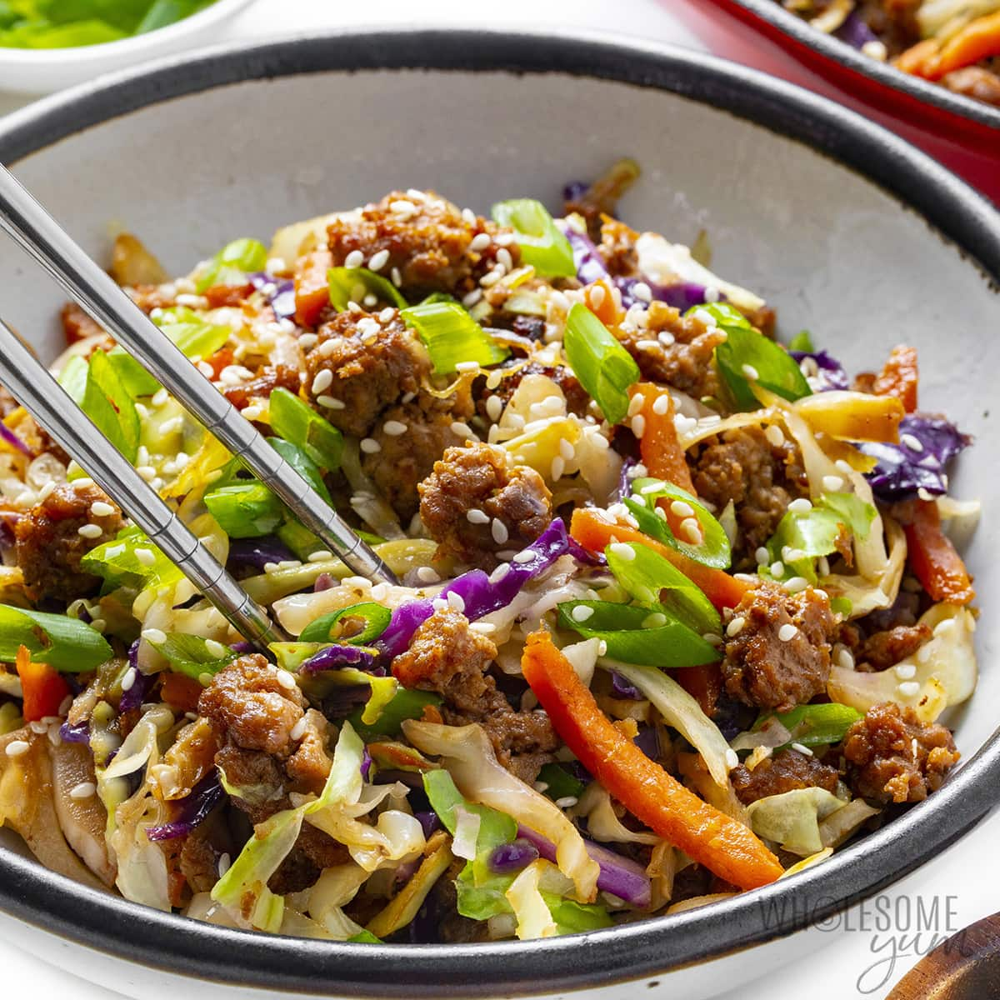

| Calories | Protein | Carbs | Fat | Fiber | Servings |
|---|---|---|---|---|---|
| ~ 400 | 21g | 12g | 30g | 3g | 10 |
Saute garlic, ginger, and green onion whites in oil until fragrant, then add ground meat and cook fully. May drain, or let the heat cook off the oil/fat.
Reduce heat to medium; add coleslaw mix and coconut aminos. Stir to coat. Cook for about 5 minutes.
Remove from heat. Stir in toasted sesame oil and green onion greens. Sprinkle with sesame seeds.